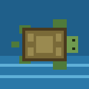
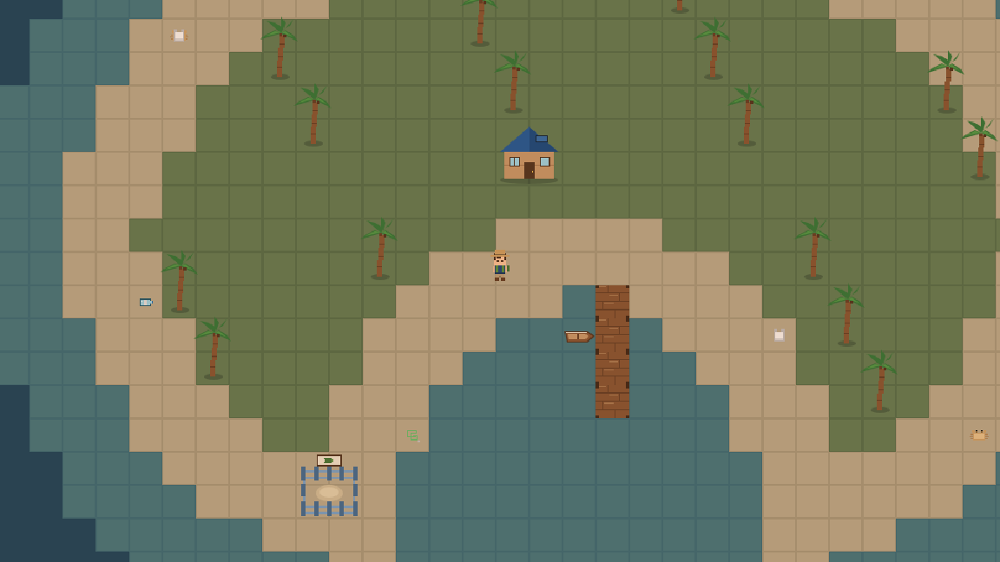

BlueHaven
Start with one little island. Help the ocean around you. Watch it come alive.

Day one: litter everywhere, and one turtle, dolphin, crab and booby, each needing help. Maya and Tom are waiting to show you where to start.
What you do
Clean up the sea
Row your little boat and collect the litter washing in, then recycle it into conservation funding.
Help the animals
Calmly free tangled turtles, dolphins and seabirds, and care for a young rescue until it's ready to go home.
Meet the islanders
Maya the researcher and Tom the lighthouse keeper know what the island needs, and where to start.
Watch it come alive
Build nesting beaches and a rescue station; the colours, sounds and animals return as the island recovers.
- No fighting
- Animals never die
- No failing, just more to help
- No in-game purchases
- Real ocean facts in the Journal
Keep your progress on a phone
The game saves by itself. To make sure your phone keeps it, add BlueHaven to your home screen and always open it from there:
iPhone or iPad
- Open Play BlueHaven in Safari.
- Tap the Share button, then Add to Home Screen.
- Open BlueHaven from its new icon.
Android
- Open Play BlueHaven in Chrome.
- Tap the ⋮ menu, then Install app (or Add to Home screen).
- Open BlueHaven from its new icon.
Progress is kept on each device separately. Private browsing, or clearing your browser's data, removes it.